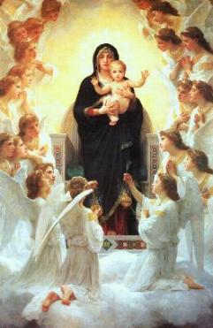
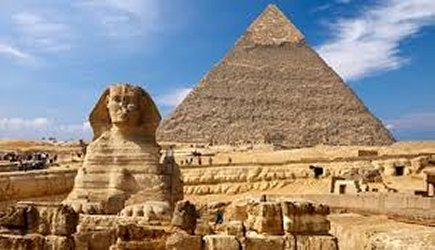

"NOSSA SENHORA DE ZEITOUN"


A VIRGEM MARIA SEMPRE AGRADÁVEL E ATENCIOSA, APARECIA COM UMA BELEZA LINDA, MARAVILHOSAMENTE INDESCRITÍVEL. O POVO EMOCIONADO E COMOVIDO, SORRIA E GRITAVA, CHORAVA E CANTANDO MANIFESTAVAM UM SONORO GRITO DE AMOR, VINDO BEM DO INTERIOR DA ALMA, COM INDIZÍVEL PRAZER, E UMA IMENSA FELICIDADE PELA PRESENÇA DA MÃE DE DEUS.
=ÍNDICE=
- DERRADEIRAS NOTÍCIAS + E-MAIL